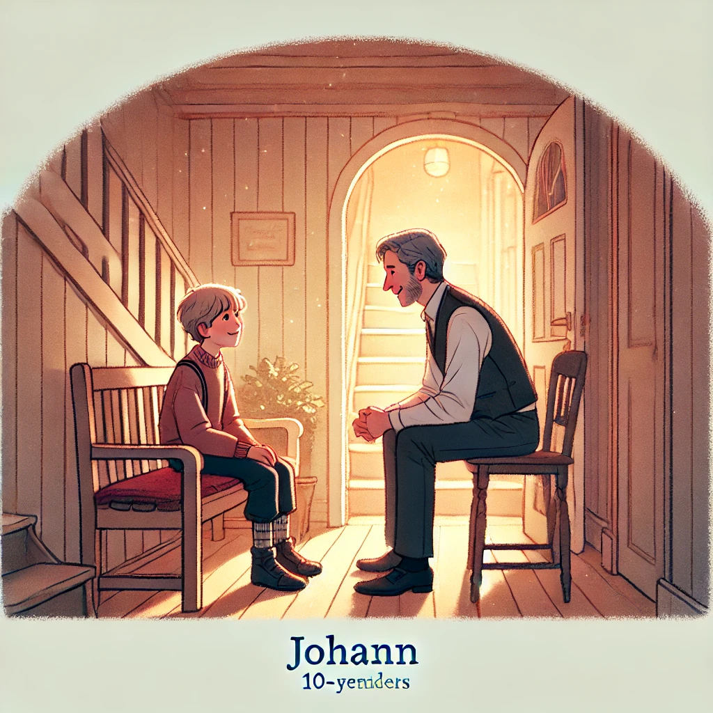

12. Dezember
Die Prophezeiung - Teil 2
Johann setzte sich schwer auf die alte Holzbank im Flur. Der Adrenalinschub der Flucht ließ langsam nach, und seine Gedanken überschlugen sich. Er sah zu Hans, der vor ihm stand, immer noch in Bewegung, durch das Fenster spähend, die Tür überprüfend, mit einem ständigen Stirnrunzeln.
„Hans,“ begann Johann zögerlich, „wer sind diese Leute? Warum jagen sie uns? Und was hat das alles mit mir zu tun?“
Hans hielt inne. Sein Blick blieb kurz auf Johann ruhen, bevor er tief seufzte und sich neben ihn setzte. „ Wir wissen nicht genau, wer die Leute sind. Carlos ist ihnen auf der Spur und kann Dir vielleicht bald genaueres dazu sagen. Warum sie ihnter Dir her sind? Es ist nicht einfach, dir das zu erklären, Johann. Aber du hast ein Recht, es zu wissen.“ Er nahm einen Moment, um die richtigen Worte zu finden.
„Hast du je von der Prophezeiung des 24. November gehört?“
Johann schüttelte den Kopf.
Hans fuhr fort: „Es gibt uralte Schriften, die besagen, dass an diesem Datum ein Kind geboren wird, das… außergewöhnlich ist. Manche nennen es einen Propheten, andere einen Wegweiser. Dieses Kind, Johann, hat Fähigkeiten, die die Welt verändern können. Es ist wie der Unterschied zwischen einem normalen Traum und einem Klartraum: Du kannst die Realität so beeinflussen, als ob du die Fäden selbst in der Hand hältst.“
Johann blinzelte, unfähig zu antworten.
„Ich weiß, es klingt verrückt,“ sagte Hans und lächelte schwach. „Aber denk mal darüber nach: Warum hat das Taxi genau im richtigen Moment gewartet, obwohl wir viel zu früh waren? Warum scheinen manche Dinge genau so zu passieren, wie du es brauchst?“
„Das ist Zufall,“ protestierte Johann schwach.
„Es gibt keinen Zufall,“ entgegnete Hans ernst. „Nicht für jemanden wie dich.“
„Und warum bin ich dann in Gefahr?“ fragte Johann.
Hans lehnte sich zurück. „Weil es Menschen gibt, die diese Fähigkeiten für sich nutzen wollen. Wenn sie dich kontrollieren könnten, wäre ihre Macht grenzenlos. Sie könnten dich zwingen, Entscheidungen zu treffen, die ihnen unvorstellbaren Reichtum und Einfluss bringen. Deswegen bist du so wichtig.“
Johann schluckte. „Also bin ich so etwas wie… ein Superheld?“
Hans lächelte. „Eine Art. Aber weißt du, warum du diese Kräfte erst jetzt spürst?“
Johann schüttelte den Kopf.
„Die Prophezeiung sagt, dass diese Fähigkeiten an deinem 10. Geburtstag aktiv werden – am 24. November. Das ist ein Wendepunkt. Von diesem Moment an beginnst du, dein volles Potenzial zu entfalten. Aber es gibt noch mehr,“ fügte Hans hinzu. „Oft verschwinden diese Kräfte wieder zum Ende der Adventszeit. Was das für dich bedeutet, werden wir sehen.“
Johann dachte kurz nach, dann fragte er leise: „Aber was ist mit Jesus? Er war doch auch so jemand, oder? Warum konnte er am Ende nicht alles kontrollieren?“
Hans zögerte. „Nicht alles im Leben liegt in unserer Hand, Johann. Manche Dinge werden von… der anderen Welt bestimmt, mit der wir verbunden sind. Diese Welt ist komplex, und wir verstehen sie nicht vollständig.“
Das ließ Johann verstummen.
Schließlich legte Hans ihm beruhigend eine Hand auf die Schulter. „Mach dir keine Sorgen, Junge. Du bist bei mir sicher. Niemand wird dich hier finden. Du solltest jetzt schlafen. Morgen sprechen wir weiter.“
Was soll Johann tun?
- Alles daran setzen, seine Faehigkeiten zu lernen.
- Alles daran setzen, mehr ueber die Verfolger rauszubekommen.
- Abwarten, es wird sich schon alles richten.